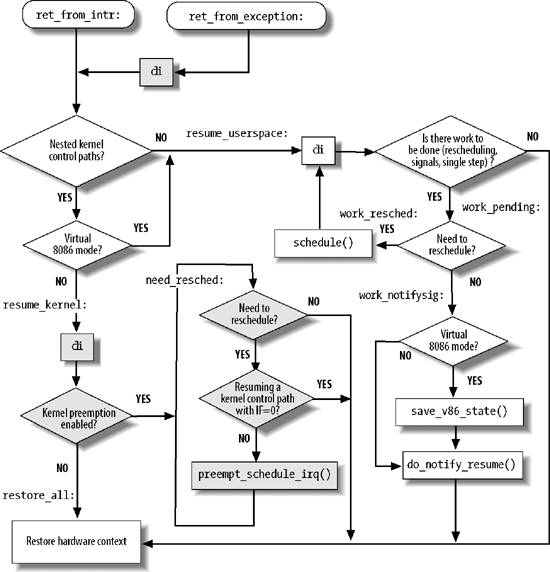

{% include JB/setup %}
{% raw %}
<div>


<a name="understandlk-CHP-4-SECT-9"></a>
<h3 class="docSection1Title" id="534869-869">4.9. Returning from Interrupts and Exceptions</h3><a name="IDX-CHP-4-1373"></a>
<a name="IDX-CHP-4-1374"></a>
<a name="IDX-CHP-4-1375"></a>
<a name="IDX-CHP-4-1376"></a>
<a name="IDX-CHP-4-1377"></a>
<a name="IDX-CHP-4-1378"></a>
<a name="IDX-CHP-4-1379"></a>
<a name="IDX-CHP-4-1380"></a>
<a name="IDX-CHP-4-1381"></a>
<p class="docText1">We will finish the chapter by examining the termination phase<a name="IDX-CHP-4-1382"></a>
<a name="IDX-CHP-4-1383"></a> 
 of interrupt and exception handlers. (Returning from a system call is a special case, and we shall describe it in <a class="pcalibre5 docLink pcalibre1" href="understandlk-CHP-10.html#understandlk-CHP-10">Chapter 10</a>.) Although the main objective is clear  namely, to resume execution of some program  several issues must be considered before doing it:</p>
<a name="IDX-CHP-4-1384"></a><dl class="docText1"><dt class="calibre7"><br class="calibre7"/><p class="calibre14"><span class="docPubcolor"><span class="docEmphasis">Number of kernel control paths being concurrently executed</span></span></p></dt><a name="IDX-CHP-4-1384"></a>
<dd class="calibre20"><p class="docList">If there is just one, the CPU must switch back to User Mode.</p></dd><dt class="calibre7"><br class="calibre7"/><p class="calibre14"><span class="docPubcolor"><span class="docEmphasis">Pending process switch requests</span></span></p></dt>
<dd class="calibre20"><p class="docList">If there is any request, the kernel must perform process scheduling; otherwise, control is returned to the current process.</p></dd><dt class="calibre7"><br class="calibre7"/><p class="calibre14"><span class="docPubcolor"><span class="docEmphasis">Pending signals</span></span></p></dt>
<dd class="calibre20"><p class="docList">If a signal is sent to the current process, it must be handled.</p></dd><dt class="calibre7"><br class="calibre7"/><p class="calibre14"><span class="docPubcolor"><span class="docEmphasis">Single-step mode</span></span></p></dt>
<dd class="calibre20"><p class="docList">If a debugger is tracing the execution of the current process, single-step mode must be restored before switching back to User Mode.</p></dd><dt class="calibre7"><br class="calibre7"/><p class="calibre14"><span class="docPubcolor"><span class="docEmphasis">Virtual-8086 mode</span></span></p></dt>
<dd class="calibre20"><p class="docList">If the CPU is in virtual-8086 mode, the current process is executing a legacy Real Mode program, thus it must be handled in a special way.</p></dd></dl>
<p class="docText1">A few flags are used to keep track of pending process switch requests, of pending signals<a name="IDX-CHP-4-1385"></a> 
, and of single step execution; they are stored in the <tt class="calibre25">flags</tt> field of the <tt class="calibre25">thread_info</tt> descriptor. The field stores other flags as well, but they are not related to returning from interrupts and exceptions. See <a class="pcalibre5 docLink pcalibre1" href="#understandlk-CHP-4-TABLE-15">Table 4-15</a> for a complete list of these flags.</p>
<a name="understandlk-CHP-4-TABLE-15"></a><p class="calibre14"><table cellspacing="0" frame="hsides" rules="all" cellpadding="4" width="100%" class="calibre15"><caption class="calibre33"><h5 class="docFigureTitle">Table 4-15. The flags field of the thread_info descriptor (continues)</h5></caption><colgroup class="calibre16"><col class="calibre17"/><col class="calibre17"/></colgroup><thead class="calibre18"><tr class="calibre34"><th class="thead" scope="col"><p class="docText1"><span class="calibre5">Flag name</span></p></th><th class="thead" scope="col"><p class="docText1"><span class="calibre5">Description</span></p></th></tr></thead><tr class="calibre2"><td class="docTableCell"><p class="docText2"><tt class="calibre25">TIF_SYSCALL_TRACE</tt></p></td><td class="docTableCell"><p class="docText2">System calls are being traced</p></td></tr><tr class="calibre2"><td class="docTableCell"><p class="docText2"><tt class="calibre25">TIF_NOTIFY_RESUME</tt></p></td><td class="docTableCell"><p class="docText2">Not used in the 80 x 86 platform</p></td></tr><tr class="calibre2"><td class="docTableCell"><p class="docText2"><tt class="calibre25">TIF_SIGPENDING</tt></p></td><td class="docTableCell"><p class="docText2">The process has pending signals</p></td></tr><tr class="calibre2"><td class="docTableCell"><p class="docText2"><tt class="calibre25">TIF_NEED_RESCHED</tt></p></td><td class="docTableCell"><p class="docText2">Scheduling must be performed</p></td></tr><tr class="calibre2"><td class="docTableCell"><p class="docText2"><tt class="calibre25">TIF_SINGLESTEP</tt></p></td><td class="docTableCell"><p class="docText2">Restore single step execution on return to User Mode</p></td></tr><tr class="calibre2"><td class="docTableCell"><p class="docText2"><tt class="calibre25">TIF_IRET</tt></p></td><td class="docTableCell"><p class="docText2">Force return from system call via <tt class="calibre25">iret</tt> rather than <tt class="calibre25">sysexit</tt></p></td></tr><tr class="calibre2"><td class="docTableCell"><p class="docText2"><tt class="calibre25">TIF_SYSCALL_AUDIT</tt></p></td><td class="docTableCell"><p class="docText2">System calls are being audited</p></td></tr><tr class="calibre2"><td class="docTableCell"><p class="docText2"><tt class="calibre25">TIF_POLLING_NRFLAG</tt></p></td><td class="docTableCell"><p class="docText2">The idle process is polling the <tt class="calibre25">TIF_NEED_RESCHED</tt> flag</p></td></tr><tr class="calibre2"><td class="docTableCell"><p class="docText2"><tt class="calibre25">TIF_MEMDIE</tt></p></td><td class="docTableCell"><p class="docText2">The process is being destroyed to reclaim memory (see the section "<a class="pcalibre5 docLink pcalibre1" href="understandlk-CHP-17-SECT-3.html#understandlk-CHP-17-SECT-3.5">The Out of Memory Killer</a>" in <a class="pcalibre5 docLink pcalibre1" href="understandlk-CHP-17.html#understandlk-CHP-17">Chapter 17</a>)</p></td></tr></table></p><br class="calibre7"/>
<p class="docText1">The kernel assembly language code that accomplishes all these things is not, technically speaking, a function, because control is never returned to the functions that invoke it. It is a piece of code with two different entry points: <tt class="calibre25">ret_from_intr( )</tt> and <tt class="calibre25">ret_from_exception( )</tt>. As their names suggest, the kernel enters the former when terminating an interrupt handler, and it enters the latter when terminating an exception handler. We shall refer to the two entry points as functions, because this makes the description simpler.</p>
<p class="docText1">The general flow diagram with the corresponding two entry points is illustrated in <a class="pcalibre5 docLink pcalibre1" href="#understandlk-CHP-4-FIG-6">Figure 4-6</a>. The gray boxes refer to assembly language instructions that implement kernel preemption (see <a class="pcalibre5 docLink pcalibre1" href="understandlk-CHP-5.html#understandlk-CHP-5">Chapter 5</a>); if you want to see what the kernel does when it is compiled without support for kernel preemption, just ignore the gray boxes. The <tt class="calibre25">ret_from_exception( )</tt> and <tt class="calibre25">ret_from_intr( )</tt> enTRy points look quite similar in the flow diagram. A difference exists only if support for kernel preemption has been selected as a compilation option: in this case, local interrupts are immediately disabled when returning from exceptions.</p>
<a name="understandlk-CHP-4-FIG-6"></a><p class="calibre14"><center class="calibre8">
<h5 class="docFigureTitle">Figure 4-6. Returning from interrupts and exceptions</h5>
</center></p><br class="calibre7"/>
<p class="docText1">The flow diagram gives a rough idea of the steps required to resume the execution of an interrupted program. Now we will go into detail by discussing the assembly language code.</p>
<a name="understandlk-CHP-4-SECT-9.1"></a>
<h4 class="docSection2Title">4.9.1. </h4>
<a name="understandlk-CHP-4-SECT-9.1.1"></a>
<h5 class="docSection3Title">4.9.1.1. The entry points</h5>
<p class="docText1">The <tt class="calibre25">ret_from_intr( )</tt> and <tt class="calibre25">ret_from_exception( )</tt> entry points are essentially equivalent to the following assembly language code:</p>
<pre class="calibre27">
    ret_from_exception:
        cli ; missing if kernel preemption is not supported
    ret_from_intr:
        movl $-8192, %ebp ; -4096 if multiple Kernel Mode stacks are used
        andl %esp, %ebp
        movl 0x30(%esp), %eax
        movb 0x2c(%esp), %al
        testl $0x00020003, %eax
        jnz resume_userspace
        jpm resume_kernel</pre><br class="calibre7"/>
<p class="docText1">Recall that when returning from an interrupt, the local interrupts are disabled (see step 3 in the earlier description of <tt class="calibre25">handle_IRQ_event( )</tt>); thus, the <tt class="calibre25">cli</tt><a name="IDX-CHP-4-1386"></a> 
 assembly language instruction is executed only when returning from an exception.</p>
<p class="docText1">The kernel loads the address of the <tt class="calibre25">tHRead_info</tt> descriptor of <tt class="calibre25">current</tt> in the <tt class="calibre25">ebp</tt> register (see "<a class="pcalibre5 docLink pcalibre1" href="understandlk-CHP-3-SECT-2.html#understandlk-CHP-3-SECT-2.2">Identifying a Process</a>" in <a class="pcalibre5 docLink pcalibre1" href="understandlk-CHP-3.html#understandlk-CHP-3">Chapter 3</a>).</p>
<p class="docText1">Next, the values of the <tt class="calibre25">cs</tt> and <tt class="calibre25">eflags</tt><a name="IDX-CHP-4-1387"></a> 
 registers, which were pushed on the stack when the interrupt or the exception occurred, are used to determine whether the interrupted program was running in User Mode, or if the <tt class="calibre25">VM</tt> flag of <tt class="calibre25">eflags</tt> was set.<sup class="docFootnote"><a class="pcalibre5 docLink pcalibre1" href="#understandlk-CHP-4-FN18">[*]</a></sup> In either case, a jump is made to the <tt class="calibre25">resume_userspace</tt> label. Otherwise, a jump is made to the <tt class="calibre25">resume_kernel</tt> label.</p><blockquote class="calibre22"><p class="docFootnote1"><sup class="calibre24"><a name="understandlk-CHP-4-FN18">[*]</a></sup> When this flag is set, programs are executed in virtual-8086 mode; see the Pentium manuals for more details.</p></blockquote>
<a name="understandlk-CHP-4-SECT-9.1.2"></a>
<h5 class="docSection3Title">4.9.1.2. Resuming a kernel control path</h5><a name="IDX-CHP-4-1388"></a>
<a name="IDX-CHP-4-1389"></a>
<p class="docText1">The assembly language code at the <tt class="calibre25">resume_kernel</tt> label is executed if the program to be resumed is running in Kernel Mode:</p>
<pre class="calibre27">
    resume_kernel:
        cli                 ; these three instructions are
        cmpl $0, 0x14(%ebp) ; missing if kernel preemption
        jz need_resched     ; is not supported
    restore_all:
        popl %ebx
        popl %ecx
        popl %edx
        popl %esi
        popl %edi
        popl %ebp
        popl %eax
        popl %ds
        popl %es
        addl $4, %esp
        iret<a name="IDX-CHP-4-1390"></a>
</pre><br class="calibre7"/>
<p class="docText1">If the <tt class="calibre25">preempt_count</tt> field of the <tt class="calibre25">tHRead_info</tt> descriptor is zero (kernel preemption enabled), the kernel jumps to the <tt class="calibre25">need_resched</tt> label. Otherwise, the interrupted program is to be restarted. The function loads the registers with the values saved when the interrupt or the exception started, and the function yields control by executing the <tt class="calibre25">iret</tt> instruction.</p>
<a name="understandlk-CHP-4-SECT-9.1.3"></a>
<h5 class="docSection3Title">4.9.1.3. Checking for kernel preemption</h5>
<p class="docText1">When this code is executed, none of the unfinished kernel control paths is an interrupt handler, otherwise the <tt class="calibre25">preempt_count</tt> field would be greater than zero. However, as stated in "<a class="pcalibre5 docLink pcalibre1" href="understandlk-CHP-4-SECT-3.html#understandlk-CHP-4-SECT-3">Nested Execution of Exception and Interrupt Handlers</a>" earlier in this chapter, there could be up to two kernel control paths associated with exceptions (beside the one that is terminating).</p>
<pre class="calibre27">
    need_resched:
        movl 0x8(%ebp), %ecx
        testb $(1&lt;&lt;TIF_NEED_RESCHED), %cl
        jz restore_all
        testl $0x00000200,0x30(%esp)
        jz restore_all
        call preempt_schedule_irq
        jmp need_resched</pre><br class="calibre7"/>
<p class="docText1">If the <tt class="calibre25">TIF_NEED_RESCHED</tt> flag in the <tt class="calibre25">flags</tt> field of <tt class="calibre25">current-&gt;thread_info</tt> is zero, no process switch is required, thus a jump is made to the <tt class="calibre25">restore_all</tt> label. Also a jump to the same label is made if the kernel control path that is being resumed was running with the local interrupts disabled. In this case a process switch could corrupt kernel data structures (see the section "<a class="pcalibre5 docLink pcalibre1" href="understandlk-CHP-5-SECT-1.html#understandlk-CHP-5-SECT-1.2">When Synchronization Is Necessary</a>" in <a class="pcalibre5 docLink pcalibre1" href="understandlk-CHP-5.html#understandlk-CHP-5">Chapter 5</a> for more details).</p>
<p class="docText1">If a process switch is required, the <tt class="calibre25">preempt_schedule_irq( )</tt> function is invoked: it sets the <tt class="calibre25">PREEMPT_ACTIVE</tt> flag in the <tt class="calibre25">preempt_count</tt> field, temporarily sets the big kernel lock counter to <tt class="calibre25">-</tt>1 (see the section "<a class="pcalibre5 docLink pcalibre1" href="understandlk-CHP-5-SECT-4.html#understandlk-CHP-5-SECT-4.2">The Big Kernel Lock</a>" in <a class="pcalibre5 docLink pcalibre1" href="understandlk-CHP-5.html#understandlk-CHP-5">Chapter 5</a>), enables the local interrupts, and invokes <tt class="calibre25">schedule( )</tt> to select another process to run. When the former process will resume, <tt class="calibre25">preempt_schedule_irq( )</tt> restores the previous value of the big kernel lock counter, clears the <tt class="calibre25">PREEMPT_ACTIVE</tt> flag, and disables local interrupts. The <tt class="calibre25">schedule( )</tt> function will continue to be invoked as long as the <tt class="calibre25">TIF_NEED_RESCHED</tt> flag of the current process is set.</p>
<a name="understandlk-CHP-4-SECT-9.1.4"></a>
<h5 class="docSection3Title">4.9.1.4. Resuming a User Mode program</h5><a name="IDX-CHP-4-1391"></a>
<a name="IDX-CHP-4-1392"></a>
<p class="docText1">If the program to be resumed was running in User Mode, a jump is made to the <tt class="calibre25">resume_userspace</tt> label:</p>
<pre class="calibre27">
    resume_userspace:
        cli
        movl 0x8(%ebp), %ecx
        andl $0x0000ff6e, %ecx
        je restore_all
        jmp work_pending</pre><br class="calibre7"/>
<p class="docText1">After disabling the local interrupts, a check is made on the value of the <tt class="calibre25">flags</tt> field of <tt class="calibre25">current-&gt;thread_info</tt>. If no flag except <tt class="calibre25">TIF_SYSCALL_TRACE</tt>, <tt class="calibre25">TIF_SYSCALL_AUDIT</tt>, or <tt class="calibre25">TIF_SINGLESTEP</tt> is set, nothing remains to be done: a jump is made to the <tt class="calibre25">restore_all</tt> label, thus resuming the User Mode program.</p>
<a name="understandlk-CHP-4-SECT-9.1.5"></a>
<h5 class="docSection3Title">4.9.1.5. Checking for rescheduling</h5>
<p class="docText1">The flags in the <tt class="calibre25">thread_info</tt> descriptor state that additional work is required before resuming the interrupted program.</p>
<pre class="calibre27">
    work_pending:
        testb $(1&lt;&lt;TIF_NEED_RESCHED), %cl
        jz work_notifysig
    work_resched:
        call schedule
        cli
        jmp resume_userspace</pre><br class="calibre7"/>
<p class="docText1">If a process switch request is pending, <tt class="calibre25">schedule( )</tt> is invoked to select another process to run. When the former process will resume, a jump is made back to <tt class="calibre25">resume_userspace</tt>.</p>
<a name="understandlk-CHP-4-SECT-9.1.6"></a>
<h5 class="docSection3Title">4.9.1.6. Handling pending signals, virtual-8086 mode, and single stepping</h5><a name="IDX-CHP-4-1393"></a>
<a name="IDX-CHP-4-1394"></a>
<a name="IDX-CHP-4-1395"></a>
<p class="docText1">There is other work to be done besides process switch requests:</p>
<pre class="calibre27">
    work_notifysig:
        movl %esp, %eax
        testl $0x00020000, 0x30(%esp)
        je 1f
    work_notifysig_v86:
        pushl %ecx
        call save_v86_state
        popl %ecx
        movl %eax, %esp
    1:
        xorl %edx, %edx
        call do_notify_resume
        jmp restore_all</pre><br class="calibre7"/>
<p class="docText1">If the <tt class="calibre25">VM</tt> control flag in the <tt class="calibre25">eflags</tt><a name="IDX-CHP-4-1396"></a> 
 register of the User Mode program is set, the <tt class="calibre25">save_v86_state( )</tt> function is invoked to build up the virtual-8086 mode data structures in the User Mode address space. Then the <tt class="calibre25">do_notify_resume( )</tt> function is invoked to take care of pending signals and single stepping. Finally, a jump is made to the <tt class="calibre25">restore_all</tt> label to resume the interrupted program.</p>

<br class="calibre7"/>

</div>

{% endraw %}

